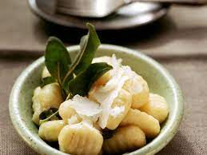

Butter Gnocchi

One of my favorite dishes...straight from northern italy simply delicious with some good texture this will be sure to bring a smile to your face.
Ingredients:
- Pack of potato gnocchi
- Butter
- Salt
- Salvia
- Black pepper
- Parmesan cheese
Steps:
- Bring pot of water to rapid boil
- Add salt and pack of potato gnocchi
- In separate pan melt 3 tablespoons of butter
- Once melted at a couple salvia leaves
- Gnocchi will be ready when they begin floating to the top of pot
- Once gnocchi are ready take them out and strain them and quickly add to pan of butter
- Stir thoroughly and add some salt and some black pepper
- Turn off stove and serve on plate
- Grate some parmesan cheese on top and enjoy..!